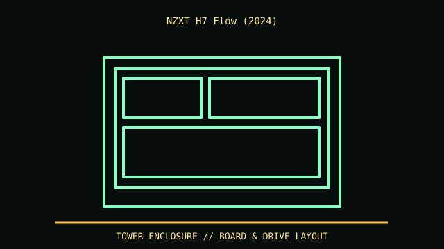

[ MODEL IDENTIFICATION // NZXT H7 FLOW 2024 MID-TOWER ]
NZXT H7 Flow (2024)
544 × 244 × 468 mm (H × W × D); up to 410 mm GPU, 185 mm CPU cooler, 200 mm PSU in listed fit. Radiator/fan assemblies reduce available length.

REVISION CAVEAT: 2024 chassis differs from 2022 H7 Flow and H7 Elite. Match the exact SKU, manual and front-I/O generation.
Specifications & fit
| Catalog subcategory | Tower and legacy desktop cases |
|---|---|
| Model / generation | NZXT H7 Flow 2024 mid-tower |
| Dimensions / form factor / clearance | 544 × 244 × 468 mm (H × W × D); up to 410 mm GPU, 185 mm CPU cooler, 200 mm PSU in listed fit. Radiator/fan assemblies reduce available length. |
| Drive bays | Two 3.5/2.5-inch combo mounts and four dedicated 2.5-inch mounts as specified for 2024 version. |
| Compatibility | E-ATX up to 277 mm wide, ATX, microATX, Mini-ITX; not all E-ATX widths or back-connect boards are universally compatible. |
| Revision identification | 2024 chassis differs from 2022 H7 Flow and H7 Elite. Match the exact SKU, manual and front-I/O generation. |
Compatibility & preservation notes
E-ATX up to 277 mm wide, ATX, microATX, Mini-ITX; not all E-ATX widths or back-connect boards are universally compatible.
Preserve filters, drive trays and front-panel cable. Check GPU length with connector bend and actual radiator thickness, not nominal chassis maximum.
- Record the complete model/SKU, serial/date label, board and bay/backplane identifiers, accessories and manual revision before disassembly.
- For tower cases, measure the installed board width, drive cage, radiator/fan stack, GPU and PSU cable bend as one build; the advertised maximums may compete.
- Keep original brackets, fasteners, trays, feet and front-panel parts labeled with the chassis. Do not force components into modified or incomplete specimens.
Manufacturer, archive & standards sources
- NZXT — H7 Flow product specificationsPrimary manufacturer or technical-reference source for this named model; use the exact SKU/document revision.
- Intel — Desktop board form factorsAdditional manufacturer, archival, or dimensional reference. Options and specimen condition can change fit.
Approximate or convention-dependent dimensions are marked as such. Measure the individual unit for restoration, shipping and installation.